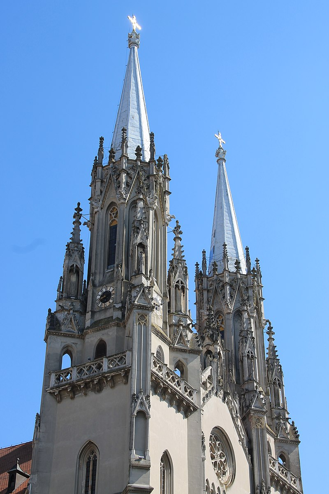
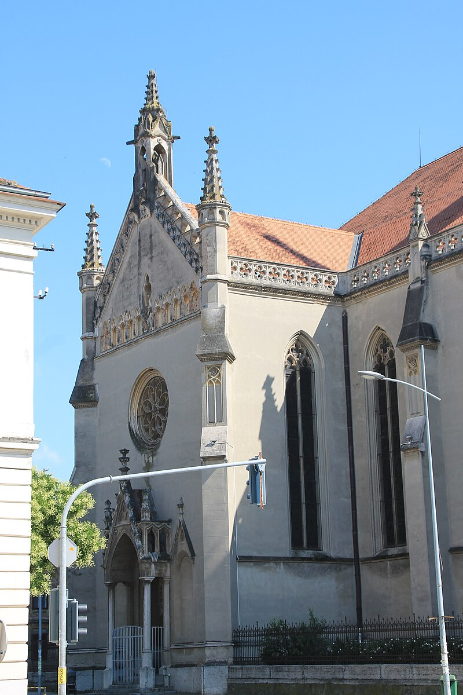
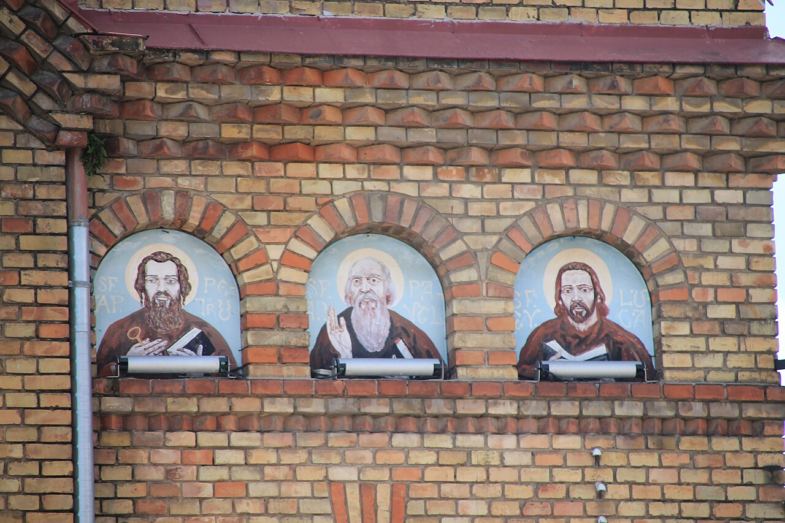
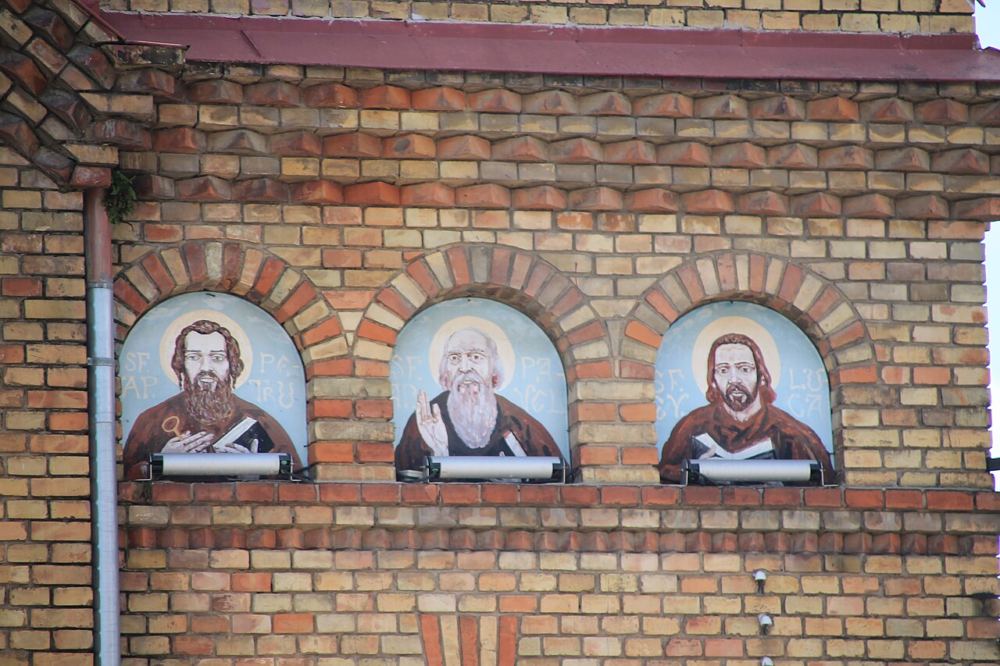

Rimokatolička crkva
Rimokatolička crkva Sv. Gerharda de Sangredo u Vršcu izgrađena je 1863. godine. Predstavlja jednu od najvećih katoličkih katedrala u Srbiji, prepoznatljiva po svojim vitražima i neogotičkom stilu. Nalazi se u centru grada i važan je verski i kulturni spomenik.

 
